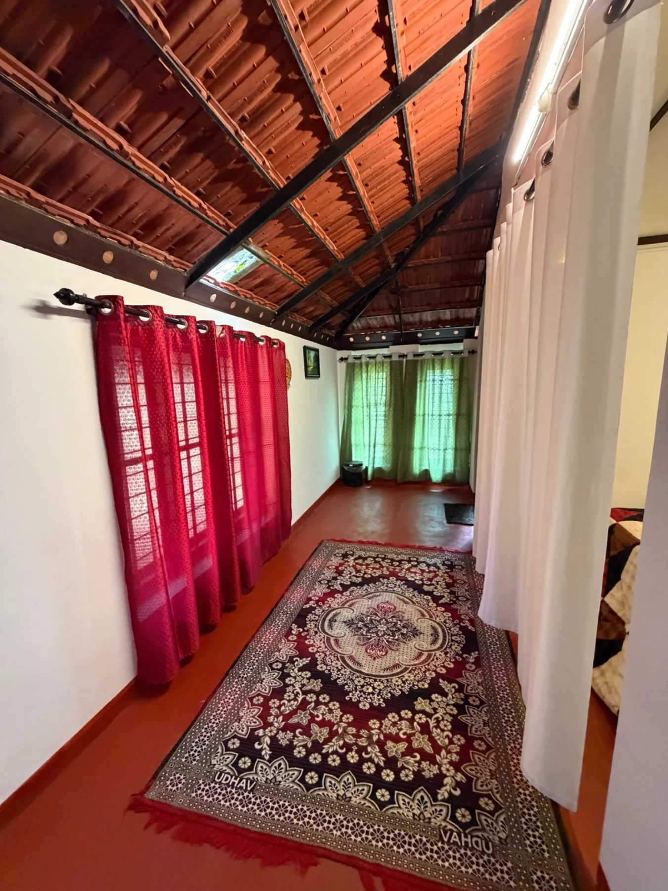

KERALA HERITAGE
The Traditional Cottage
The green, old-home inspired cottage is the heart of Wild Gooseberries — earthy walls, tiled roof, wooden details and a shaded verandah made for slow mornings.
- Traditional Kerala character
- Private sitting/verandah spaces
- Garden and forest atmosphere